ButcherBox had strong product-market fit and a digital experience that hadn’t kept up. The signup flow was built for desktop and fell apart on mobile.
Four years, led UX & product design, directed a small team while doing the core design work.
- 4 years Led UX & product design
- Conversion ↑ Mobile signup flow
- AOV ↑ Shopping & member deals
- CX inbound ↓ Subscription management
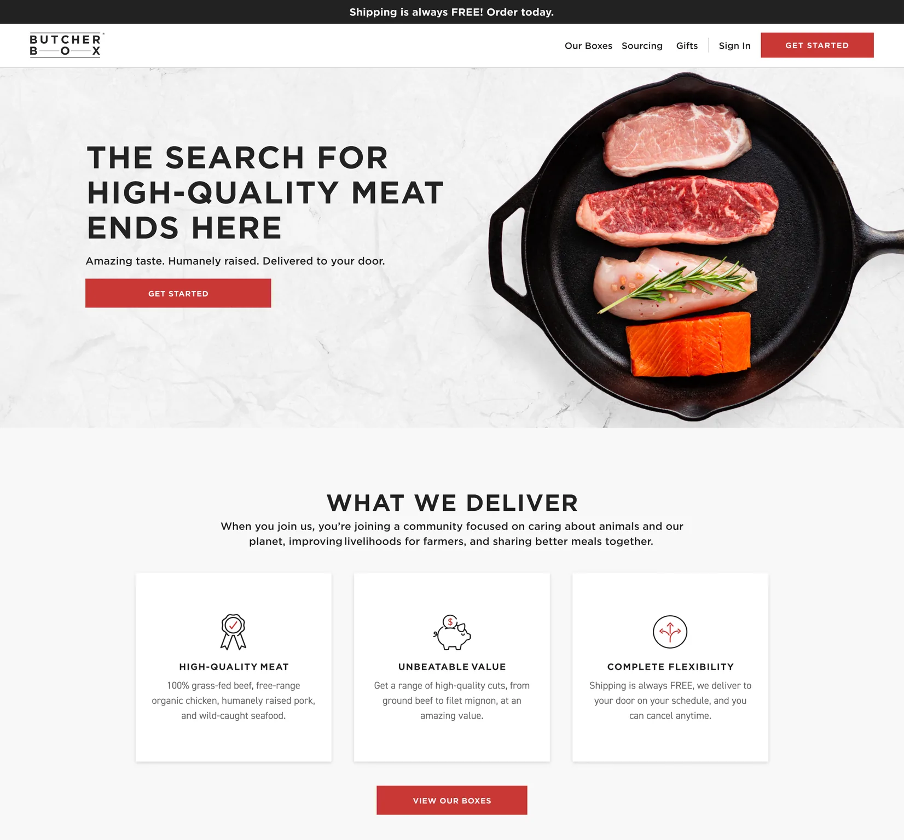
I ran a UX assessment with a UX researcher that included a UX audit, unmoderated usability testing, and interviews with current members. The assessment allowed us to understand where and why the experience was breaking down.
Three findings shaped everything that followed.
- The signup flow asked for too many decisions at once, with no sense of how long it would take or what customers were committing to.
- ButcherBox’s quality and flexibility weren’t communicated until too late in the funnel.
- Members managing their subscriptions faced a fragmented interface that generated confusion and drove unnecessary calls to customer service.
Those findings aligned the team on two priorities: communicate ButcherBox’s value early and often, and design a consistent, mobile-first experience that anticipates what members need next.
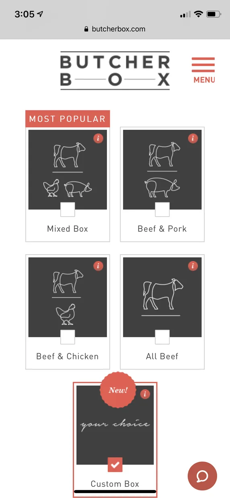
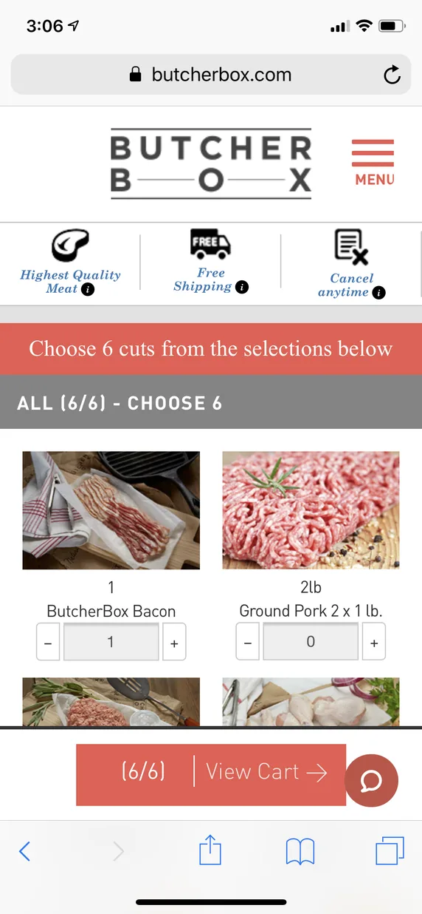
Mobile web screenshots before redesign
The subscription onboarding redesign was four steps, mobile-first with a progress indicator and a persistent “Your Box” panel. Fixed Next CTAs and an easy protein jump navigation provided big touch targets to keep moving.
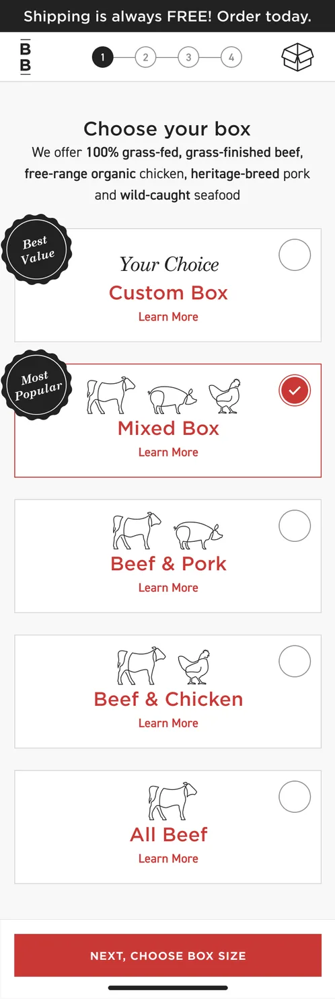
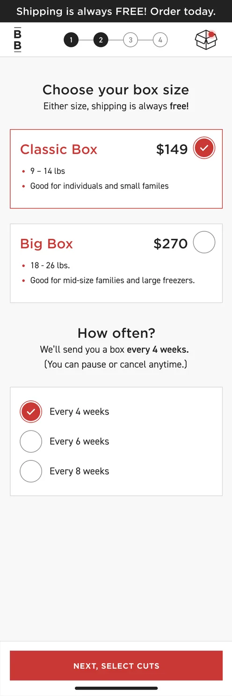
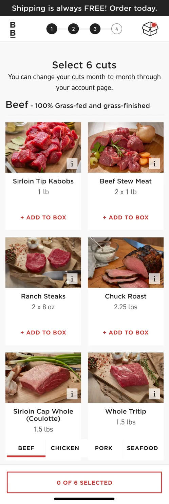
Members had a box manager and nothing else. There was no browsing, no product pages, nowhere for deals and add-ons to live.
I designed the shopping experience members didn’t have: product listing pages, product detail pages, and a place to browse and save recipes. Box management moved to its own screen.
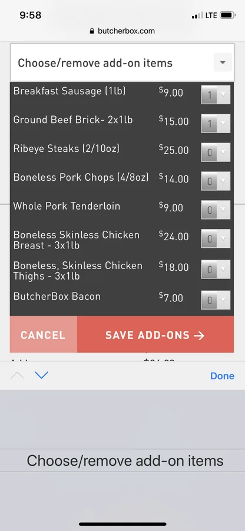
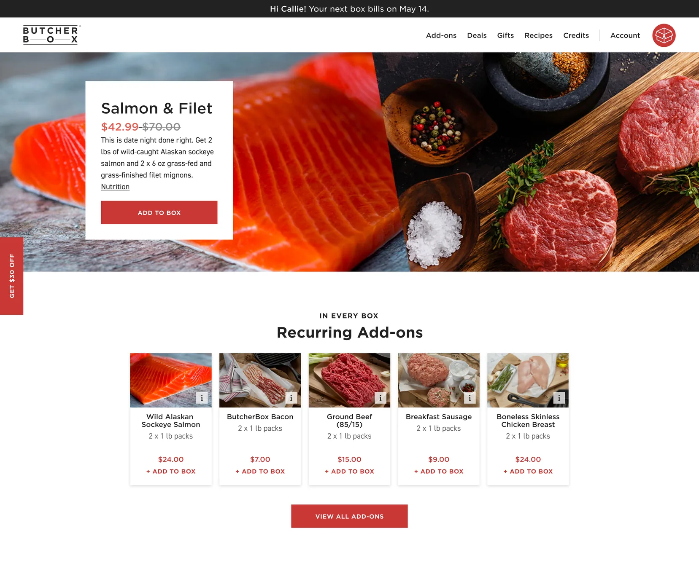
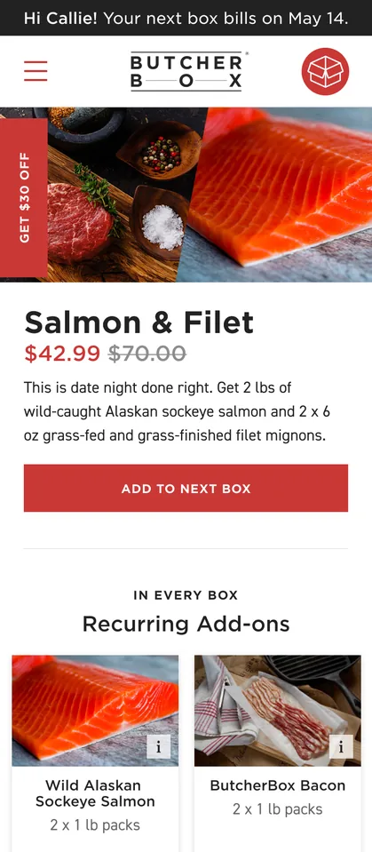
Box management was redesigned around bill date and estimated delivery. Totals break out by subscription, deals, and add-ons, and every product is editable with a thumbnail.
The goal throughout was that nobody feels locked into a plan they can’t adjust.
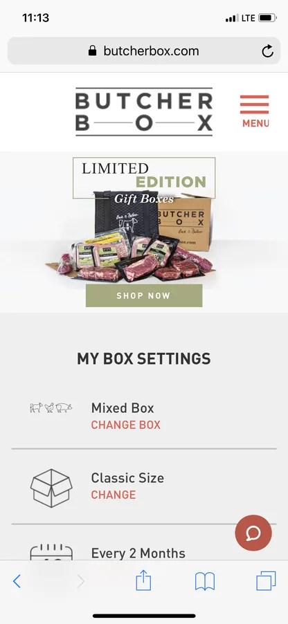
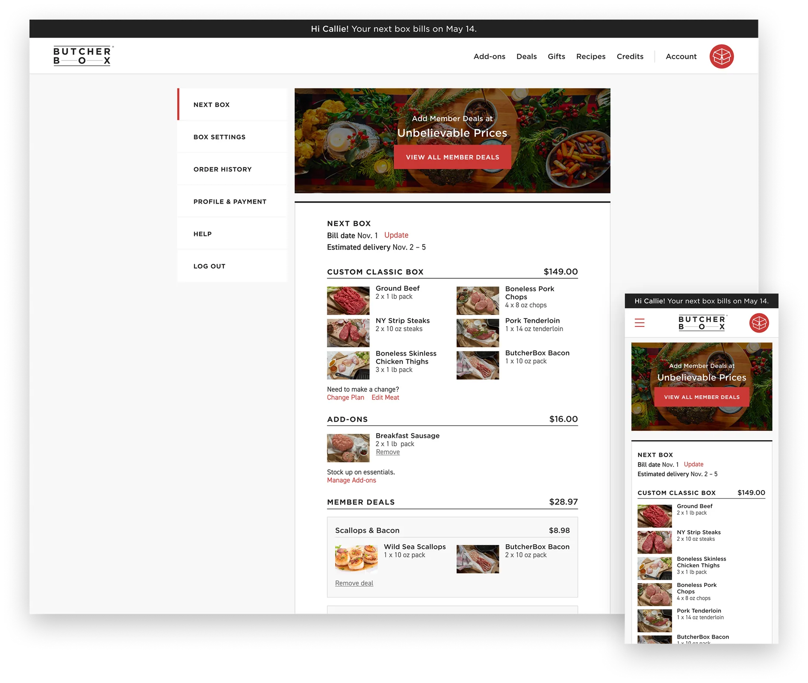
ButcherBox had strong product-market fit and a digital experience that hadn’t kept up. The signup flow was built for desktop and fell apart on mobile.
Four years, led UX & product design, directed a small team while doing the core design work.
- 4 years Led UX & product design
- Conversion ↑ Mobile signup flow
- AOV ↑ Shopping & member deals
- CX inbound ↓ Subscription management